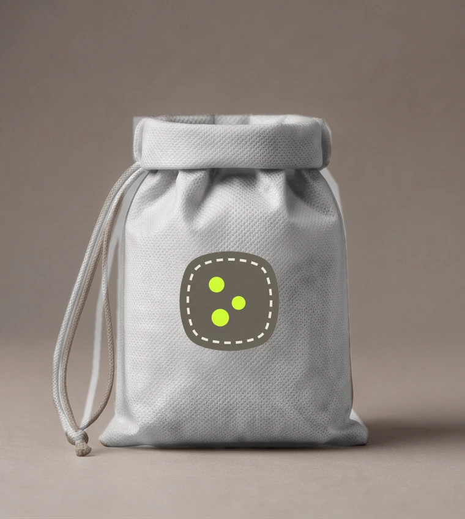

Aktivkohle-Säckchen · 50 g · Kokosnussschalen
Gestank.Einfachweg.
Keine Chemie. Nur Physik.
7.90 CHFpro Säckchen (50 g)

↔ Ziehen zum Drehen 50 g50 gAktivkohle-Granulat
0Parfüm & Duftstoffe
100 %Keine Chemie. Nur Physik.
Wie funktioniert Aktivkohle?
Keine Chemie.
Nur Physik.
Vom Geruch in der Luft bis ins Innerste eines Kohlekorns: Hier siehst du, wo die Moleküle bleiben.
Aktivkohle hat eine riesige innere Oberfläche — ein einziges Gramm hat die Fläche eines Tennisplatzes. Geruchsmoleküle lagern sich an dieser Oberfläche an (Adsorption) und bleiben dort. Es wird nichts überdeckt, es wird nichts maskiert: Der Geruch verschwindet, weil er gebunden wird.
Der Unterschied zu Duftsprays: Sprays fügen einen neuen Geruch hinzu. Aktivkohle nimmt den alten weg.
1 gAktivkohle — winzig, unscheinbar
≈ 1 Tennisplatzinnere Oberfläche, an der Gerüche gebunden werden
Wie verwende ich die Säckchen?
Auspacken.
Platzieren. Fertig.
Kein Spray, kein Strom, kein Aufwand. Drei Schritte — und die Kohle macht den Rest.
Frisch halten bis zum Einsatz. Öffne den luftdichten Zip Bag erst, wenn du das Säckchen brauchst.
Dorthin, wo es riecht. Im Schrank, WC oder beim Abfalleimer platzieren — oder mit der Kordel aufhängen.
Ein Ventilator ist optional. Bei hoher Geruchslast oder in grösseren Umluftbereichen bringt moderate Luftbewegung zusätzliche Moleküle zur Kohle.
Optional: mehr Luftbewegung
Wann ein Ventilator sinnvoll ist.
In kleinen, geschlossenen Räumen reicht es, das Säckchen am Geruchsort zu platzieren oder aufzuhängen — ein Ventilator ist nicht nötig. Bei höherer Geruchslast oder grösseren Umluftbereichen kann ein bereits vorhandener Ventilator die Wirkung unterstützen: Hänge das Säckchen frei in eine moderate Luftströmung.
- Ohne Ventilator: direkt am Geruchsort platzieren oder aufhängen
- Mit Ventilator: frei in moderate Luftströmung hängen
- Nicht auf das Gerät legen und Luftein- und -austritt frei halten
Dosierung
Die Faustregel:
50–100 g pro m³.
Ein Säckchen (50 g) ist ideal für kleine, geschlossene Räume bis ca. 1 m³ — z. B. Schränke, Abfalleimer-Umgebung, WC — oder das Zimmer, in dem deine Tomaten überwintern.
Für grössere Räume: verteile mehrere Säckchen (Multi-Sack-Strategie). So bleibt die Kontaktfläche pro Volumen hoch.
Der Säckchen-Rechner
Wie viele braucht dein Raum?
Raumvolumen0.58 m³
1–2 Säckchen
Je höher die Geruchslast, desto eher am oberen Ende dosieren.
Pflege & Austausch
Eine Kohle,
viele Leben.
Gut gepflegt hält das Säckchen deutlich länger als ein Wegwerfprodukt — und du merkst rechtzeitig, wann es Zeit wird.
- 01
Luftdicht lagern
Säckchen vor Gebrauch luftdicht im Zip-Bag aufbewahren — erst vor Gebrauch öffnen.
- 02
Alle 4–8 Wochen prüfen
Nach Wochen bis Monaten (je nach Geruchslast) ist die Oberfläche voll — bei starker Belastung regelmässig kontrollieren.
- 03
Regenerieren: einige Stunden direktes Sonnenlicht (ca. alle 3–6 Monate)
UV + Wärme treiben Feuchtigkeit und leichte Gerüche aus.
- 04
Oder ersetzen
Hat sich eine Fett- oder Feuchteschicht gebildet, ist die Regeneration begrenzt — dann ist Austausch die ehrliche Lösung.
Bezug & Preis
Frische Luft.
Ein kleiner Preis.
Kokosnuss-Aktivkohle, in der Schweiz abgefüllt. Ein Säckchen für kleine, geschlossene Räume.
Für Händler:innen
Händler werden
Du möchtest NO STANK. in deinem Sortiment? Wir bieten den Verkauf auf Kommission: Du rechnest verkaufte Stück ab und gibst unverkaufte Ware zurück. Schreib uns für Konditionen und ein Probemuster.
info@nostank.chGut zu wissen
Sicherheitshinweise
- Nicht zum Verzehr
- Nicht öffnen
- Von Kindern, Tieren und offener Flamme fernhalten
- Nicht in der Nähe von Lebensmitteln platzieren.